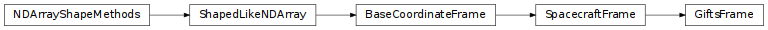

GIFTS Spacecraft Frame (gdt.missions.gifts.frame)¶
Note
The GIFTS spacecraft frame implementation and this document are currently based on those provided by the Fermi Gamma-ray Data Tools, and will be revised in future versions.
The GIFTS spacecraft frame, GiftsFrame, is the frame that is aligned
with the GIFTS spacecraft coordinate frame, and is represented by a
quaternion that defines the rotation from spacecraft coordinates to the ICRS
coordinate frame. This frame takes advantage of the Astropy coordinate frame
design, so we can use the GiftsFrame to convert Astropy SkyCoord objects
between the GiftsFrame and any celestial frame.
While the GiftsFrame is typically initialized when reading from a mission
position history file (e.g. GiftsPosHist) instead of manually by a user, we
can manually define the frame with a Quaternion:
>>> from gdt.core.coords import Quaternion
>>> from gdt.missions.gifts.frame import *
>>> quat = Quaternion([-0.218, 0.009, 0.652, -0.726], scalar_first=False)
>>> gifts_frame = GiftsFrame(quaternion=quat)
>>> gifts_frame
<GiftsFrame: 1 frames;
obstime=[J2000.000]
obsgeoloc=[(0., 0., 0.) m]
obsgeovel=[(0., 0., 0.) m / s]
quaternion=[(x, y, z, w) [-0.218, 0.009, 0.652, -0.726]]>
Notice that we can also define the frame with an obstime, which is useful
for transforming between the GiftsFrame and a non-inertial time-dependent frame;
an obsgeoloc, which can define the spacecraft location in orbit; and
obsgeovel, which defines the spacecraft orbital velocity.
Now let us define a SkyCoord in RA and Dec:
>>> from astropy.coordinates import SkyCoord
>>> coord = SkyCoord(100.0, -30.0, unit='deg')
This can be rotated into the GIFTS frame with the following:
>>> gifts_coord = coord.transform_to(gifts_frame)
>>> (gifts_coord.az, gifts_coord.el)
(<Longitude [200.39733555] deg>, <Latitude [-41.88750942] deg>)
We can also transform from the GIFTS frame to other frames. For example, we define a coordinate in the GIFTS frame this way:
>>> gifts_coord = SkyCoord(50.0, 25.0, frame=gifts_frame, unit='deg')
Now we can tranform to ICRS coordinates:
>>> gifts_coord.icrs
<SkyCoord (ICRS): (ra, dec) in deg
[(313.69000519, 26.89158349)]>
or Galactic coordinates:
>>> gifts_coord.galactic
<SkyCoord (Galactic): (l, b) in deg
[(71.5141302, -11.56931006)]>
or any other coordinate frames provided by Astropy.
Reference/API¶
gdt.missions.gifts.frame Module¶
Functions¶
|
Convert from the GIFTS frame to the ICRS frame. |
|
Convert from the ICRS frame to the GIFTS frame. |
Classes¶
|
The GIFTS spacecraft frame in azimuth and elevation. |
Class Inheritance Diagram¶
